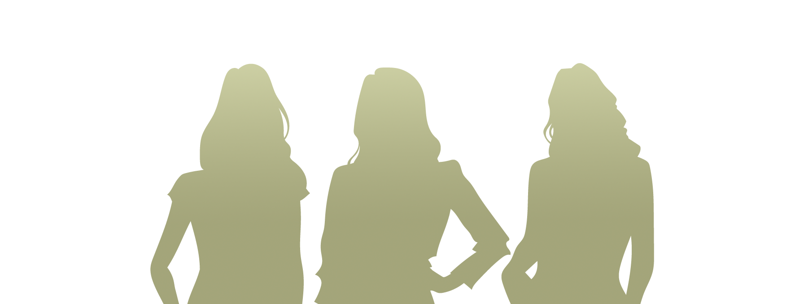
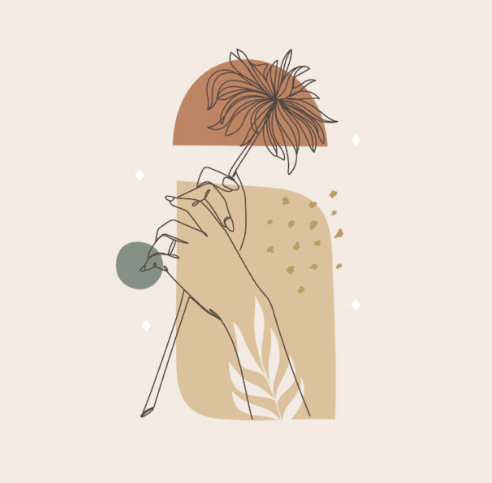
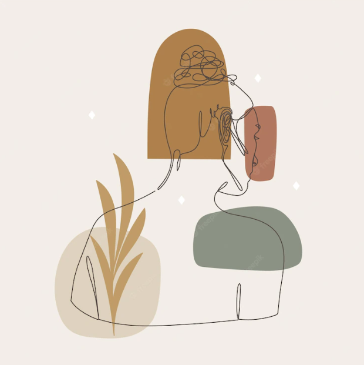
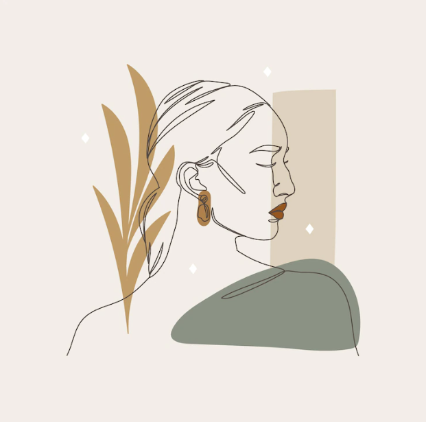
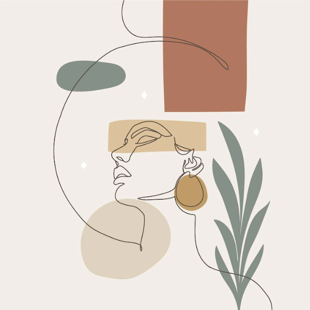
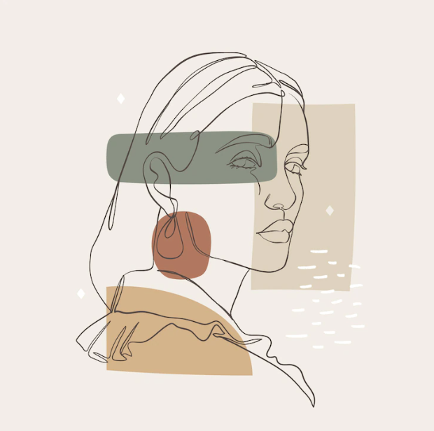
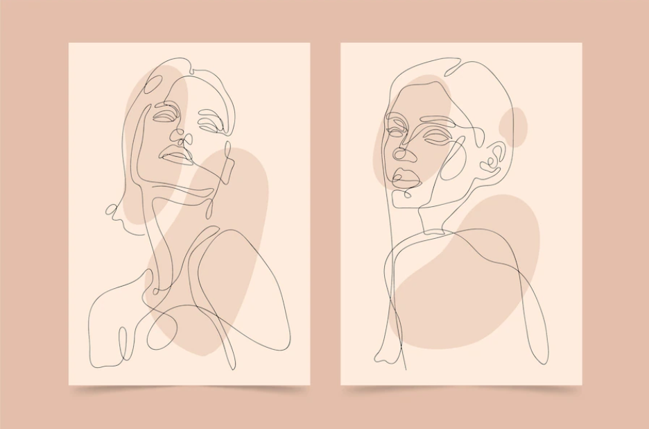
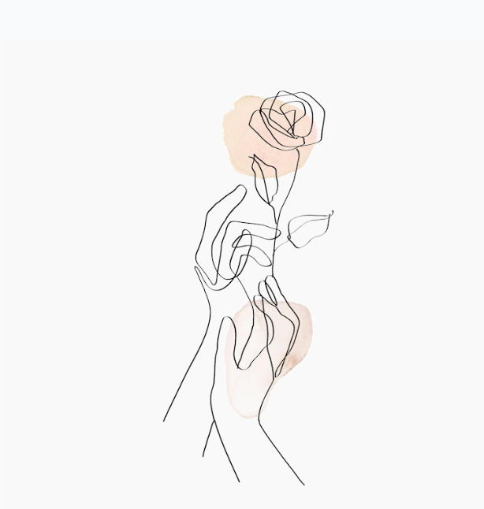

yang dapat berguna jika kamu ingin menjadi Kartini modern,
sekaligus perempuan yang menginspirasi


1. Kelilingi dirimu dengan orang-orang yang positif
Berada di sekitar orang-orang negatif dan tidak menghargai upaya yang kita lakukan dapat memengaruhi pikiran dan perasaan kita menjadi lebih buruk. Kita tidak selalu bisa mengubah perilaku dan pandangan orang lain tentang apa yang kita lakukan. Untuk itu, jika kita tidak mampu mengubah sumber masalah, mari cari orang-orang yang positif dan kelilingi diri kita dengan mereka.

2. Temukan dukungan sosial yang baik
Tidak peduli seberapa kuat kita, kita masih membutuhkan orang lain untuk mendukung kita. Ada kalanya kita merasa lelah, tidak ada salahnya untuk istirahat dan bergantung atau meminta bantuan orang lain. Jika perlu, carilah dukungan atau bantuan dari seorang profesional seperti psikolog.

3. Jadilah diri sendiri dan lakukanlah!
Ini hidupmu! Kamu menulis kisah hidupmu. Jadilah diri sendiri untuk menemukan apa yang paling kamu inginkan dalam hidupmu. Kemudian rencanakan perjalananmu untuk mencapainya. Jangan hidup hanya untuk membahagiakan orang lain.

4. Hargai setiap usaha yang kamu lakukan
Roma tidak dibangun dalam satu hari! Tidak ada usaha yang instan, semua butuh proses. Hargai setiap usaha dan langkah yang kamu ambil untuk mencapai apa yang kamu cita-citakan. Kegagalan itu biasa, yang terpenting jangan menyerah.

5. Sadarilah bahwa setiap orang memiliki nilai dan budaya yang berbeda
Setiap orang memiliki pengalaman hidup yang berbeda, sehingga nilai dan prinsip yang dianut pun berbeda. Kita tidak bisa memaksakan nilai yang kita miliki pada orang lain, dan begitu pula sebaliknya. Hargai pendapat mereka walaupun berbeda, coba untuk pahami sudut pandang mereka, namun kita tidak harus selalu mengubah nilai dan prinsip kita. Ambil yang baik, buang yang buruk, dan jangan lupa untuk bertoleransi.

Women in Tech (WIT)
Web Programming Unpas (WPU)
WIT WPU merupakan wadah berkumpulnya para perempuan dari server Discord WPU. WIT mengadakan berbagai event seperti talkshow dan webinar. Di WIT, para perempuan bisa saling tanya-jawab seputar programming atau hal-hal lainnya. Di WIT para perempuan mendukung perempuan lainnya untuk berkembang dan maju.

Halo!
Perkenalkan, saya Pamela Sarnia, salah satu member Women in Tech (WIT) WPU. Saya ikut Kartini Challenge sembari berlatih membuat website dengan animasi menggunakan CSS. Menyenangkan juga mencoba menggunakan berbagai animasi CSS dalam satu website :D